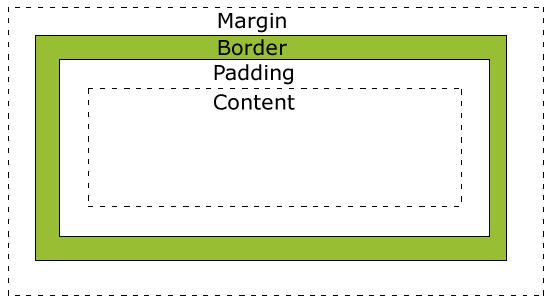
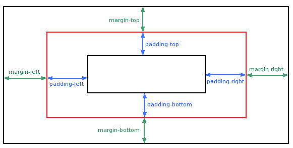
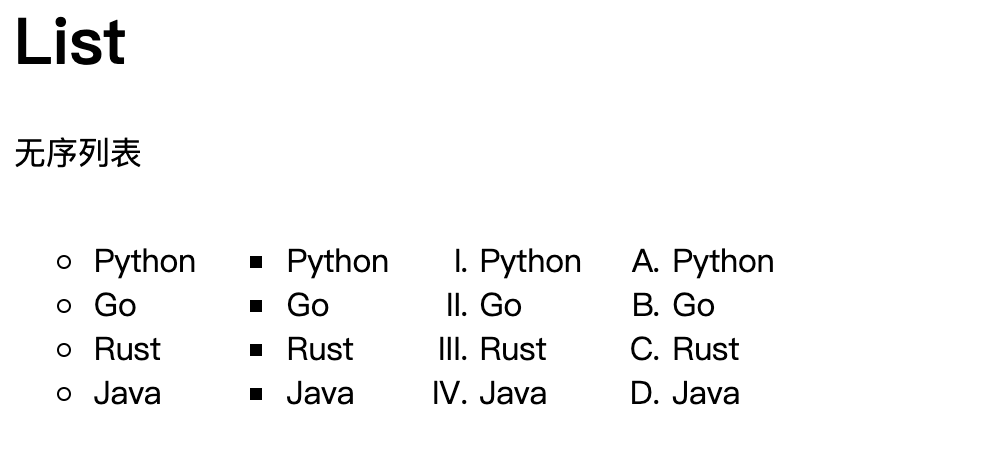
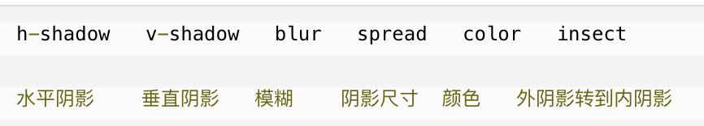
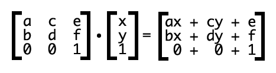

引言
从 0 到 1 实现一个网站，前端部分自然是要了解 CSS 的。CSS 的全称是 Cascading Style Sheets，它是一种专门用于给结构化文档（如 Web HTML）添加样式的语言。我们可以通过使用 CSS 来为网页布局，设定字体的样式，设定动画等，让我们的网站更加炫酷，更加现代化。而这些通过传统的编程语言来实现会非常繁琐，使用 CSS 只需要按需定义即可，极大地提高了开发效率。本篇笔记主要是记录核心的 CSS 技巧，相关的练习位于 GitHub learning-css 仓库。
CSS 基础
多重样式优先级顺序（依次增加）：
- 通用选择器（
*） - 元素（类型）选择器
- 类选择器
- 属性选择器
- 伪类
- ID 选择器
- 内联样式
- 通用选择器（
!important规则在被应用样式声明中时，该样式声明会覆盖 CSS 中任何其他的声明，使用它并非好习惯：- Always：要优化考虑使用样式规则的优先级来解决问题，而非
!important - Only：只有在需要覆盖全站或外部 CSS 的特定页面中使用它
- Never：永远不要在全站范围使用它
- Never：永远不要在你的插件中使用它
- Always：要优化考虑使用样式规则的优先级来解决问题，而非
CSS 链接样式：
- 四种特殊状态可以分别设置：
a:link: 正常，未访问过的链接a:visited: 已访问过的链接a:hover: 鼠标放在链接上时a:active: 链接被点击的那刻
- 上述顺序很重要，简记：
L(ink)OV(isited)E and H(over)A(ctive)TE
- 四种特殊状态可以分别设置：
所有的 HTML 元素都可以看做是一个 Box。CSS 盒模型本质上就是封装了 HTML 元素的盒子。图示如下：
当指定 CSS 元素的高度和宽度时，只是在设置内容区域的高度和高度。实际元素尺寸计算：
- 总宽度 = 内容宽度 + 左填充 + 右填充 + 左边框 + 右边框 + 左边距 + 右边距
- 总高度 = 内容高度 + 顶部填充 + 底部填充 + 上边框 + 下边框 + 上边距 + 下边距
盒样式应用（适用于 margin, padding 等简写样式的情况）：
- 四个值：a, b, c, d -> 上，下，左，右（逆时针方向）
- 三个值：a, b, c -> 上，左右，下
- 两个值：a, b -> 上下，左右
- 一个值：a -> 上下左右
outline 是在 border 外部的，在元素周围绘制出元素的边缘，起到突出元素的作用。使用方式类似
border，可设定的属性包括：outline-style,outline-color,outline-width等。需要注意的是，outline是不占空间的，不会增加额外的宽度和高度。outline也可能是非矩形的，和浏览器实现有关。margin & padding：
隐藏元素：
display:none：不会占据空间，会从布局中移除visibility:hidden：会占据空间，影响布局
块（ block）元素：
- 占据全部宽度，并且会产生换行
- width, height, padding, margin 都是可控制的
- 块元素：
<address/>,<blockquote/>,<center/>,<dir/>,<div/>,<dl/>,<fieldset/>,<form/>,<h1/>,<h2/>,<h3/>,<h4/>,<h5/>,<h6/>,<hr/>,<isindex/>,<menu/>,<noframes/>,<noscript>,<ol/>,<p/>,<pre/>,<table/>,<ul/>,<li/>
内联（inline）元素：
- 只占据必要的宽度，不会换行
- width, height, padding-top, padding-bottom, margin-top, margin-bottom 都不可改变
- 内联元素：
<a/>,<abbr/>,<acronym/>,<b/>,<bdo/>,<big/>,<br />,<cite/>,<code/>,<dfn/>,<em/>,<font/>,<i/>,<img/>,<input/>,<kbd/>,<label/>,<q/>,<s/>,<samp/>,<select/>,<small/>,<span/>,<strike/>,<strong/>,<sub/>,<sup/>,<textarea/>,<tt/>,<u/>,<var/>
主要使用的三种样式：
display:block：显式为块元素display:inline：显示为内联元素display:inline-block：显示为内联块元素，表现为同行显示，同时可以修改 width/height/padding/margin 等，效果如下：

CSS 定位（Position）：
- static：元素默认定位方式，不受 top/bottom/left/right 的影响
- relative：相对正常位置的偏移；原本空间依然会被预留出来，可能会与别的元素重叠
- fixed：元素的位置相对于浏览器窗口是固定的，会和其它元素重叠；元素的位置和文档流无关，不占据空间
- absolute：绝对定位的元素的位置是相对于最近的已定位父元素，若元素无已定位父元素，则它的位置是相对于 ；与文档流无关，不占据空间，会与其它元素重叠
- sticky：粘性定位，与滚动有关，受限于浏览器
- 可以使用
overflow指定当内容溢出时的行为（可选择是否展示滚动条），但其只可用于指定了高度的块元素上
元素的浮动：
- 会让元素向左或向右浮动，周围元素也会重新排列
- 元素水平浮动，意味着只能左右移动
- 浮动元素会尽量向左或向右移动，直到它的外边缘碰到包括框或另一个浮动框的边缘为止
设置居中：
- 元素居中：可以通过
margin: auto解决，但是必须要设置元素的宽度 - 文本居中：可使用
text-align
- 元素居中：可以通过
组合选择器：
- 后代选择器：
div p - 子元素选择器：
div>p - 相邻兄弟选择器：
div+p - 普通兄弟选择器：
div~p
- 后代选择器：
伪类（pseudo-classes）：
- 用于添加一些选择器的特殊效果
- 伪类选择的元素是基于当前元素所处的状态，或者是元素所具有的特性，而非静态标志（如 class, id, 属性）。而状态是动态的，所以当一个元素到达一个特定状态的时候，可能得到一个伪类的样式；当状态改变时，它会失去这个样式。基于文档之外的抽象，故称为伪类。
- 语法：
selector:psedudo-class { property: value }selector.class:pseudo-class { property: value }
- 伪类名称不区分大小写
- 示例：
a:hover { color: red }
伪元素（pseudo-element）：
- 用于添加一些选择器的特殊效果
- 语法：类似伪类
- 伪元素是对元素中特定内容选择并操作，操作层次要比伪类更深，动态性比伪类低。设计伪元素的目的就是选取诸如第一个字母（行）等，选取内容的前后并操作等，这些普通的选择器是无法完成的。本身是基于元素的抽象，不存在于文档中，故称为伪元素。
属性选择器：
- 语法：
<element>[attr] { }或者<element>[attr<op>value]{ } - 选择范围：
=:equal_word*=: 相当于contains，如<p title="buyfflowerrr"></p>~=: 相当于contains_word，如<p title="buy flower"></p>中的 flower|=: 相当于starts_with_word，当然这里的单词应是唯一的，或者是用-分隔的^=: 相当于starts_with$=: 相当于ends_with
- 语法：
CSS 3 简记
CSS 3 被拆分成了「模块」，一些重要的模块如下：
- 选择器
- 盒模型
- 背景和边框
- 文字特效
- 2D/3D 转换
- 动态
- 多列布局
- 用户界面
渐变（Gradients）：
- 线性渐变（Linear Gradients）：向下/向上/向左/向右/对角线
- 径向渐变（Radius Gradients）：由相应的中心定义
- 语法：
background: linear-gradient (direction, color-stop1, color-stop2, ...)
box-shadow顺序：2D 转换：
translate,translateX,translateYrotate,rotateX,rotateYscale,scaleX,scaleYskew,skewX,scaleYmatrix：- 接收六个参数：
a, b, c, d, tx, ty 对照：
- 位移：
matrix(1, 0, 0, 1, tx, ty)=translate(tx + "px", ty + "px") - 缩放：
matrix(sx, 0, 0, sy, 0, 0)=scale(sx, sy) - 旋转：
matrix(cosθ, sinθ, -sinθ, cosθ, 0, 0)=rotate(θ + "deg") - 倾斜：
matrix(1, tan(θy), tan(θx), 1, 0, 0)=skew(θx + "deg", θy + "deg")
- 位移：
计算方式：
- 接收六个参数：
过渡效果：
transition: property duration timing-function delay- 其中，默认情况下，duration 为 0，所以如果不设置该值，将看不到效果
- 过渡动画时间曲线：
- ease：默认值
- linear
- ease-in
- ease-out
- ease-in-out
- cubic-bezier(n, n, n, n)：贝塞尔曲线函数，可以通过指定值来实现上述效果，同时可以自定义其它值实现自定义效果
关键帧动画：
- 使用
@keyframes创建动画，可以使用n%设定处于不同阶段时的属性，而from和to分别代表0%和100% - 使用
animation属性绑定动画到选择器上，需要设定两个值：- 动画名称
- 动画时长
- 使用
Flex 布局：
- 当页面需要适应不同的屏幕大小及设备类型时，确保元素拥有恰当的行为布局方式
- 提供一种更加有效的方式对一个容器中的子元素进行排列、对齐和分配空间
- 组成：
- Flex container
- Flex item
- 属性设置：
display: flex/inline-flex - 设置主轴对齐方式：
justify-content - 设置侧轴对齐方式：
align-items - 设置换行：
flex-wrap - 设置各个行的对齐方式：
align-content